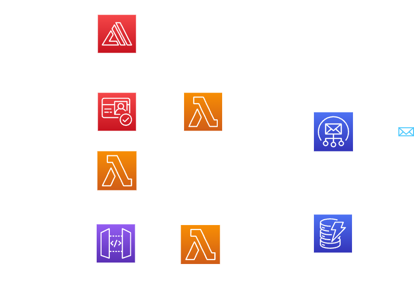

Kudos Web Application
The Kudos web application was developed by using HTML, CSS, and JavaScript, is an innovative employee recognition software aimed at creating a positive work environment and improving productivity. It features a user-friendly interface and utilizes various AWS components, including AWS Amplify, Amazon Cognito, AWS Lambda, Amazon DynamoDB, API Gateway, and Amazon SES. The seamless integration of these technologies ensures optimal performance, security, and efficient data flow. By implementing Kudos, businesses can enhance employee morale, increase productivity, and establish a reputation for valuing their workforce.
- Company: Shine Solutions
- Location: Canberra
- Completed On: May 2023
Key Features
- Peer recognition and rewards
- Real-Time Email Notifications
- Secure user authentication
- User-Friendly Website
Project Benefits
- Improved employee morale and satisfaction
- Increased productivity and engagement
- Enhanced company reputation through positive work culture
- Valuable tool for performance evaluation
Technologies Used
- AWS services : Amplify, Cognito, Lambda, API Gateway, DynamoDB, Amazon SES
- Frontend & Backend Technologies : HTML, CSS, and JavaScript
Architecture Diagram
The development process of the Kudos project commenced with the establishment of a robust AWS environment. The frontend was meticulously crafted using industry-standard technologies such as HTML, CSS, and Javascript. Leveraging the power of AWS Amplify, the frontend was efficiently deployed to ensure optimal performance. To prioritize the security of user data, Amazon Cognito was seamlessly integrated to provide a secure and reliable authentication mechanism.
Moving to the backend, the development was executed utilizing the powerful capabilities of AWS Lambda and the scalable Amazon DynamoDB database. These technologies were instrumental in delivering a robust and efficient backend infrastructure. The integration between the frontend and backend was seamlessly facilitated through well-designed APIs via API Gateway.
As part of enhancing the user experience, real-time email notifications were implemented using the reliable and efficient Amazon SES service. This feature enabled instant updates and notifications for users, contributing to a more engaging and interactive platform.
The architecture diagram showcases the cohesive and streamlined flow of the Kudos application, highlighting the seamless interaction between various AWS components and the efficient data flow between frontend and backend systems.

Project Outcomes
The successful development and deployment of the Kudos project resulted in several notable outcomes and opportunities for learning:
- Functional Employee Recognition Web App: A user-friendly web application was built that enables effective employee recognition, fostering a positive work environment and encouraging increased productivity.
- User Authentication for Sign-ups & Sign-ins: Incorporating Amazon Cognito led to secure user authentication for sign-ups and sign-ins, underscoring the importance of user data security.
- Real-Time Email Notifications: The integration of the Amazon SES service facilitated real-time email notifications, enhancing the user experience by delivering instant updates and notifications.
- Learning about AWS Services: The project offered a robust platform for learning about various AWS services such as Amplify, Cognito, Lambda, API Gateway, DynamoDB, and Amazon SES. This knowledge was crucial in integrating these services to construct an efficient web application.